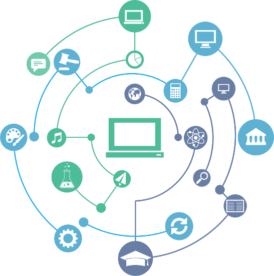

Fundamentos de Sistemas de Informação

Tipos de Sistemas de Informação
Sistemas de Informação é a expressão utilizada para descrever um Sistema seja ele automatizado (que pode ser denominado como Sistema Informacional Computadorizado), seja manual, que abrange pessoas, máquinas e/ou métodos organizados para coletar, processar, transmitir e disseminar dados que representam informação para o usuário e/ou cliente.
Informações são dados oferecidos de uma forma significativa e útil para os indivíduos. Dados são correntes de fatos brutos que importam eventos que estão ocorrendo nas organizações ou no ambiente físico, antes de terem sido organizados e arranjados de uma forma que as pessoas possam entendê-los e usá-los. Os sistemas podem ser manuais e automatizados (Entrada, Processamento e Saída).
Dados: Forma bruta, valor isolado, sem valor em si.
Informações: Dados organizados de tal forma que tem valor agregado.
Dados: Forma bruta, valor isolado, sem valor em si.
Informações: Dados organizados de tal forma que tem valor agregado.
Estrutura de um Sistema de Informação
- Hardware
- Software
- Banco de Dados
- Redes de Telecomunicações
- Pessoas
Classificações
Sistemas de informações podem ser classificados como:
| Tipo | Descrição |
|---|---|
| Sistemas de Informação Gerencial (SIG) | Agrupam e sintetizam os dados das operações da organização para facilitar a tomada de decisão pelos gestores da organização. |
| Sistemas de Informação Estratégicos | (BI - Business Intelligence): integram e sintetizam dados de fontes internas e externas à organização, utilizando ferramentas de análise e comparação complexas, simulação e outras facilidades para a tomada de decisão da cúpula estratégica da organização. |
| Sistemas de Informação Comerciais/Negociais | (Customer relationship management — CRM): referem-se ao processo de coleta, análise, compartilhamento e monitoramento de informações que oferecem suporte à gestão de negócios de uma organização, tanto em relação ao comércio e colaboração com outras empresas, como ao atendimento direto com o cliente. |
Sistemas Colborativos
Sistemas colaborativos são softwares e aplicativos que operam em redes, preferencialmente na nuvem, e têm o objetivo de otimizar o trabalho em equipe, a troca de informações e o fluxo de ideias e materiais, como arquivos, planilhas, apresentações, documentos de texto e outros. Software colaborativo (ou groupware) é um software que apoia o trabalho em grupo. CSCW é a abreviatura de "Computer Supported Cooperative Work" (em português, "trabalho cooperativo auxiliado por computador"). Trata-se de uma área científica interdisciplinar que estuda a forma como o trabalho em grupo pode ser auxiliado por tecnologias de informação e comunicação.
Características
- Acesso muito mais ágil e barato a redes confiáveis
- Acesso remoto
- Possibilidade de uso dos mais variados dispositivos móveis
- Segurança das informações
- Menores custos de deslocamento para troca de informações nas empresas
- Dados atualizados e confiáveis
- Troca de informações em tempo real
- Amplo espaço de armazenamento
Computação nas Nuvens
O conceito de computação em nuvem (em inglês, cloud computing) refere-se à utilização da memória e da capacidade de armazenamento e cálculo de computadores e servidores compartilhados e interligados por meio da Internet, seguindo o princípio da computação em grade.
O armazenamento de dados é feito em serviços que poderão ser acessados de qualquer lugar do mundo, a qualquer hora, não havendo necessidade de instalação de programas ou de armazenar dados. O acesso a programas, serviços e arquivos é remoto, através da Internet - daí a alusão à nuvem. O uso desse modelo (ambiente) é mais viável do que o uso de unidades físicas. Em computação, virtualização é o ato de criar uma versão virtual (em vez de real) de algo, incluindo a simulação de uma plataforma de hardware, sistema operacional, dispositivo de armazenamento ou recursos de rede.
O armazenamento de dados é feito em serviços que poderão ser acessados de qualquer lugar do mundo, a qualquer hora, não havendo necessidade de instalação de programas ou de armazenar dados. O acesso a programas, serviços e arquivos é remoto, através da Internet - daí a alusão à nuvem. O uso desse modelo (ambiente) é mais viável do que o uso de unidades físicas. Em computação, virtualização é o ato de criar uma versão virtual (em vez de real) de algo, incluindo a simulação de uma plataforma de hardware, sistema operacional, dispositivo de armazenamento ou recursos de rede.
| Tipo | Descrição |
|---|---|
| Internet | A Internet é um sistema global de redes de computadores interligadas que utilizam um conjunto próprio de protocolos (Internet Protocol Suite ou TCP/IP) com o propósito de servir progressivamente usuários no mundo inteiro. É uma rede de várias outras redes, que consiste de milhões de empresas privadas, públicas, acadêmicas e de governo, com alcance local e global e que está ligada por uma ampla variedade de tecnologias de rede eletrônica, sem fio e ópticas. |
| Intranet | (BI - Business Intelligence): integram e sintetizam dados de fontes internas e externas à organização, utilizando ferramentas de análise e comparação complexas, simulação e outras facilidades para a tomada de decisão da cúpula estratégica da organização. |
| Extranet | (Customer relationship management — CRM): referem-se ao processo de coleta, análise, compartilhamento e monitoramento de informações que oferecem suporte à gestão de negócios de uma organização, tanto em relação ao comércio e colaboração com outras empresas, como ao atendimento direto com o cliente. |
E-Business
E-business, acrónimo do inglês Electronic Business (negócio eletrônico), é o termo que se utiliza para identificar os negócios efetuados por meios eletrônicos, geralmente na Internet. Muitas vezes é associado ao termo correio eletrônico. Pode-se definir e-business como negócios feitos através da Internet no sentido mais amplo da palavra negócio, desde contatos diretos com consumidores, fornecedores como também análises de mercado, análises de investimentos, busca de informações sobre o macroambiente, pesquisa de mercados, etc.
Sistemas de Informação Gerencial
O S.I.G. é um conjunto de pessoas e softwares, organizados que fornecem e auxiliam informações às tarefas executadas pelos diretores da empresa. Com base nesse conceito:
Um Sistema de Informações Gerencial (SIG) abrange uma coleção organizada de pessoas, procedimentos, software, banco de dados e dispositivos que fornecem informação rotineira aos gerentes e aos tomadores de decisão. O foco de um SIG é, principalmente, a eficiência operacional. Marketing, produção, finanças e outras áreas funcionais recebem suporte dos sistemas de informação gerencial e estão ligados através de um banco de dados comum.
Mapas Conceituais
Mapa conceitual é uma estrutura gráfica que ajuda a organizar ideias, conceitos e informações de modo esquematizado.

Consiste numa ferramenta de estudo e aprendizagem, onde o conteúdo é classificado e hierarquizado de modo a auxiliar na compreensão do indivíduo que o analisa. A partir de uma representação gráfica ilustrativa, a pessoa que idealiza um mapa conceitual consegue criar ligações entre os diferentes assuntos que fazem parte de determinado conhecimento.